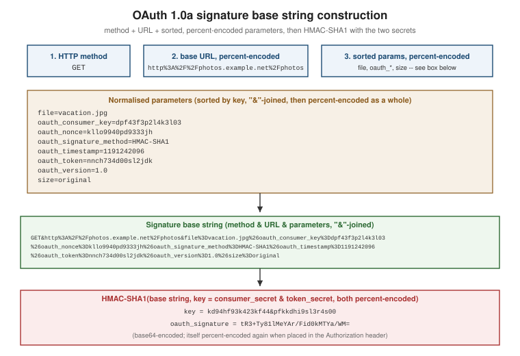

OAuth 1.0a
|
This content was generated with the assistance of AI and should be verified against the official documentation before being relied on in production. |
OAuth 1.0a is still encountered in long-lived enterprise and legacy APIs, and understanding how it actually works is the fastest way to understand what OAuth 2.0 deliberately changed — most of the comparisons on OAuth 1.0 vs. OAuth 2.0 only make sense once the signature mechanism below is concrete rather than abstract. This page documents the protocol as specified by RFC 5849 and OAuth Core 1.0 Revision A; see How OAuth evolved for how it got here and why it was superseded.
Consumer key and consumer secret
Where OAuth 2.0 calls the calling application a "client" with a client_id, OAuth 1.0a calls it a consumer,
identified by a consumer key and a consumer secret issued when the consumer registers with the service
provider. The consumer secret is the shared secret half of every signature the consumer will ever produce (see
below) — it is never transmitted on the wire, only used locally to compute signatures the server can verify
because it holds the same secret.
Two further credentials, an OAuth token and token secret, are obtained per resource owner during the flows below and used the same way: as inputs to the signature, never sent in the clear except as an identifier.
The three-legged flow
The canonical OAuth 1.0a flow — named because it involves three parties across three steps — lets a consumer obtain access to a resource owner’s data at a service provider without ever seeing the resource owner’s credentials there:
-
Obtain a request token — the consumer makes a signed request to the service provider’s request token endpoint, including a callback URL. The service provider returns an unauthorized request token (
oauth_token) and its secret (oauth_token_secret). -
Direct the resource owner to authorize it — the consumer redirects the resource owner’s browser to the service provider’s authorization endpoint with the request token attached. The resource owner authenticates to the service provider directly (the consumer never sees this credential) and approves or denies the consumer’s request.
-
Exchange the authorized token — the service provider redirects back to the consumer’s callback URL with the same
oauth_tokenand a new, randomoauth_verifier(the parameter Revision A added after Security Advisory 2009.1, see How OAuth evolved). The consumer presents both, signed, to the access token endpoint, and receives a long-lived access token and token secret it can use for subsequent API calls.
Every request in this flow — and every subsequent API call using the access token — is individually signed; there is no bearer credential anywhere in OAuth 1.0a.
The two-legged variant
When there is no resource owner to redirect — a consumer accessing its own data at the service provider, or
a purely machine-to-machine integration — the request-token and authorization steps are skipped entirely. The
consumer signs requests directly with its consumer key and secret (and no token/token secret, or a
pre-provisioned one), which the service provider verifies the same way it would verify any signed request. This
is functionally the ancestor of OAuth 2.0’s client_credentials grant, covered on
Client credentials and client
authentication, minus the bearer token: two-legged OAuth 1.0a never issues a separate credential, because the
signature is the proof of identity on every call.
The Authorization: OAuth header and its parameters
RFC 5849 §3.5.1 defines the preferred way to transmit OAuth parameters: an Authorization header whose scheme
is OAuth, carrying each oauth_* parameter as a quoted, comma-separated, percent-encoded key-value pair:
GET /photos?file=vacation.jpg&size=original HTTP/1.1
Host: photos.example.net
Authorization: OAuth realm="Photos",
oauth_consumer_key="dpf43f3p2l4k3l03",
oauth_token="nnch734d00sl2jdk",
oauth_signature_method="HMAC-SHA1",
oauth_timestamp="1191242096",
oauth_nonce="kllo9940pd9333jh",
oauth_version="1.0",
oauth_signature="tR3%2BTy81lMeYAr%2FFid0kMTYa%2FWM%3D"| Parameter | Meaning |
|---|---|
|
Identifies the consumer, analogous to OAuth 2.0’s |
|
The current token (request token or access token, depending on which leg of the flow this call belongs to); absent for two-legged calls with no token. |
|
Which of |
|
Seconds since the Unix epoch when the request was signed — part of replay protection. |
|
A value unique per |
|
Always |
|
The computed, percent-encoded signature over the request, described in full below. |
Query-string and form-body transmission of the same parameters are also permitted by RFC 5849, but the
Authorization header is preferred because it keeps oauth_* values out of server access logs and browser
history, which query parameters do not.
The signature base string
The heart of OAuth 1.0a is the signature base string: a single, canonical string built deterministically from
the request, which both the consumer and the service provider construct independently and which the signature
is computed over. If both sides build the same string, a matching signature proves the request has not been
tampered with and was produced by whoever holds the shared secret. RFC 5849 §3.4.1 defines the construction in
three parts, joined with &:
-
the HTTP method, upper-cased (
GET,POST, …); -
the base URL — scheme, authority and path, with no query string, default ports omitted — percent-encoded;
-
the normalized request parameters — every
oauth_*parameter (exceptoauth_signatureandrealm) plus every query-string and form-body parameter, each percent-encoded, sorted first by key and then by value (byte-wise), joined askey=valuepairs with&, and the entire resulting string percent-encoded again before being appended to the base string.

A fully worked example
Take a GET request for http://photos.example.net/photos?file=vacation.jpg&size=original, signed with
consumer key dpf43f3p2l4k3l03, token nnch734d00sl2jdk, oauth_timestamp=1191242096,
oauth_nonce=kllo9940pd9333jh, and oauth_signature_method=HMAC-SHA1.

Step 1 — the normalized parameter set, sorted by key:
file=vacation.jpg
oauth_consumer_key=dpf43f3p2l4k3l03
oauth_nonce=kllo9940pd9333jh
oauth_signature_method=HMAC-SHA1
oauth_timestamp=1191242096
oauth_token=nnch734d00sl2jdk
oauth_version=1.0
size=originalStep 2 — joined and percent-encoded as a single string (every = becomes %3D, every separating &
becomes %26):
file%3Dvacation.jpg%26oauth_consumer_key%3Ddpf43f3p2l4k3l03%26oauth_nonce%3Dkllo9940pd9333jh%26oauth_signature_method%3DHMAC-SHA1%26oauth_timestamp%3D1191242096%26oauth_token%3Dnnch734d00sl2jdk%26oauth_version%3D1.0%26size%3DoriginalStep 3 — the complete base string, with the method and the percent-encoded base URL prepended:
GET&http%3A%2F%2Fphotos.example.net%2Fphotos&file%3Dvacation.jpg%26oauth_consumer_key%3Ddpf43f3p2l4k3l03%26oauth_nonce%3Dkllo9940pd9333jh%26oauth_signature_method%3DHMAC-SHA1%26oauth_timestamp%3D1191242096%26oauth_token%3Dnnch734d00sl2jdk%26oauth_version%3D1.0%26size%3DoriginalStep 4 — the signing key. For HMAC-SHA1, the key is the percent-encoded consumer secret and the
percent-encoded token secret, joined with & (if there is no token secret yet, as with an unauthorized request
token, the second half is simply empty). Using illustrative secrets kd94hf93k423kf44 (consumer) and
pfkkdhi9sl3r4s00 (token):
kd94hf93k423kf44&pfkkdhi9sl3r4s00Step 5 — the signature. oauth_signature = BASE64(HMAC-SHA1(signing key, base string)). Computing this over
the exact base string and key above yields:
tR3+Ty81lMeYAr/Fid0kMTYa/WM=which, percent-encoded for transmission in the Authorization header, is tR3%2BTy81lMeYAr%2FFid0kMTYa%2FWM%3D — exactly the value shown in the header example earlier on this page. Any change to the method, the URL, a
parameter value, or either secret produces a completely different signature, which is precisely what lets the
service provider detect tampering.
The three signature methods
| Method | How it works |
|---|---|
|
The symmetric scheme worked through above: both parties hold the same consumer secret (and token secret), and HMAC-SHA1 over the base string proves possession of both without transmitting either. |
|
An asymmetric scheme: the consumer signs the base string with its RSA private key; the service provider verifies with the corresponding public key it already has on file. No consumer secret is transmitted or needed for signing; only the private key must stay confidential. |
|
No cryptography at all — |
Replay protection: oauth_nonce and oauth_timestamp
A valid signature alone does not stop a captured request from being replayed verbatim by whoever intercepted
it — the signature would still verify, because nothing about it changes on replay. oauth_timestamp and
oauth_nonce close that gap together: the service provider rejects any request whose timestamp is too far from
its own clock (bounding how long a captured request stays exploitable), and rejects any request whose
(consumer key, token, timestamp, nonce) combination it has already seen (making even a request captured
within the timestamp window replayable at most once). Implementing this correctly requires the service
provider to remember every nonce it has seen for at least as long as its timestamp window, which is real
operational state a bearer-token resource server does not need to keep.
Where OAuth 1.0a still survives
OAuth 1.0a is formally superseded, but it did not disappear — it persists in specific, identifiable pockets:
-
Long-lived enterprise and B2B integrations built before 2012, where the cost of a migration has never quite cleared the bar against "it still works", especially for internal or low-traffic integrations.
-
Some financial, telecom and travel-industry APIs whose original integrations predate OAuth 2.0 and where regulatory or contractual inertia keeps the original signing scheme in place.
-
A handful of public APIs that shipped an OAuth 1.0a integration early and never revisited it — historically including Twitter’s original API v1.1 endpoints (now largely migrated, but instructive as the most commonly cited example of 1.0a’s real-world longevity).
If you meet a service that only offers OAuth 1.0a today: implement the signature base string exactly as specified above using a maintained library rather than hand-rolling the canonicalisation (interop bugs in exactly this step are the leading cause of "my signature doesn’t match" support tickets, and are the concrete motivation for OAuth 2.0 dropping signatures — see How OAuth evolved); always transmit over TLS regardless of signature method, since 1.0a’s signature protects integrity, not confidentiality; and treat the consumer secret and token secret with the same care as a private key, since either one leaking lets an attacker forge valid signatures indefinitely.
Where to go next
-
OAuth 1.0 vs. OAuth 2.0 — each limitation above matched to what OAuth 2.0 did about it.
-
How OAuth evolved — the 2009 session-fixation advisory that produced Revision A and
oauth_verifier. -
Sender-constrained tokens: DPoP and mTLS — where per-request proof of possession returns to OAuth 2.0, deliberately scoped to where it earns its cost.